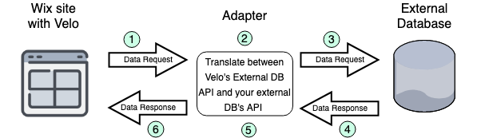

之前在「梅竹黑客松開發部」時整理的 guide。
因為把其他部分的 code 也貼上來好像不太好，沒有全部放，所以有些地方可能會不知道在表達什麼。
但應該還是能從本文中知悉一點大概念～
以 Server / Build Informations Related Service 為例
前置作業
在 git 上建立新分支並用程式碼編輯器打開 project
1 | # 1. 為了接下來的操作，先切換路徑到 mc-landing-server 的所在位置 |
開始寫 model 囉
先打開 mc-landing API server spec 這個頁面，我們以這個頁面的 schema 定義來寫我們的 model
1
2
3
4
5
6
7
8
9
10
11
12
13
14
15
16
17
18
19
20
21informations: {
_id: <ObjectId>,
user_id: <ObjectId>,
tag_id: <ObjectId>,
title: <String>,
content: <String>,
created_at: <Number>,
updated_at: <Number>
}
Index:
{ title: 'text' }
{ created_at: -1 }
{ updated_at: -1 }
{ tag_id: 1 }
tags: {
_id: <ObjectId>,
name: <String>,
color: <Number>
}開好之前定的 schema 以後，我們就準備依樣畫葫蘆囉～ （這就是為什麼我們要分兩階段進行：第一個階段在我們還不需要實際打 code 的時候，專心一意地去想我們的 schema 要怎麼規劃才能符合需求，然後把它寫下來；第二個階段就直接照第一階段寫的，實際去寫成 code。就好像蓋房子的時候：畫藍圖 → 開始動工！）
回到 VSCode，在 models 資料夾底下建一個 informations.js （如果是做 Server / Build Posts Related Service 就建 posts.js，以此類推）
複製 users.js 裡面的 code 到 informations.js 裡面，然後開始改
正式開始寫 model 的 code
- 從 mongoose 裡面取用 Schema，準備用 Schema 自定義我們的 schema！
1 | const Mongoose = require('mongoose'); |
- 把我們定義的 schema 命名為 informationsSchema（或 postsSchema）
- 最下面的
strict: 'throw'是一種 optional 的設定，意思是： 若 insert 一個不符合我們 schema 的新 document 時，會直接 drop 掉也會報出錯誤 - 灰色被 comment 掉的部分是我們要改的部分！
1 | const informationsSchema = new Schema({ |
_id不用寫上去，mongoose 會幫我們建好～user_id、tag_id是指外部 schema (users、tags) 的 _id，所以用Mongoose.Types.ObjectId當作 type，這就是資料庫裡面常聽到的 relation， 有看過「6 Rules of Thumb for MongoDB Schema Design」這篇文章大概就會懂required: true意思是：insert 新 document 時必須有這個欄位 （像 tag 可以之後再加上去，所以就不用 required 了）- 至於有什麼 type 呢？參考 Mongoose 吧！（我們是用 Mongoose 來建 model）
1 | const informationsSchema = new Schema({ |
- 進行 index 吧！index 是為了方便之後搜尋排序等等的操作。
'text'Text indexes? To support text search queries on string content.1：由小排到大-1：由大排到小
1 | informationsSchema.index({ title: 'text' }); |
- 以 informations 這個 name 把我們定義好的 informationsSchema export 出去
1 | module.exports = Mongoose.model('informations', informationsSchema); |
為待會 service 的參數驗證做準備
- 打開 libs/validates.js
- 在 users service related 下面，加入新的參數驗證，一樣參考 mc-landing API server spec
（type 有哪些？參考 fastest-validator，因為 Moleculer 的參數驗證 based on it）
（為什麼不用加入_id、user_id、tag_id呢？因為第八行已經寫好 _id 類的了xD）
1 | // users service related |
重頭戲：API 本體（service）
- 在 services 資料夾底下新增 informations.service.js（posts.service.js）
- 直接複製貼上 users.service.js 的 code 吧！（實在不少行xD 當然自己打過印象會更深刻）
- 來改 code 吧！
（細節上次開會的時候講過了，如果忘記的話，可以上網查或是直接來問我們～）
- 第 4 行改 model 的名字（左右都要改哦～）
1 | const InformationsModel = require('../models/informations'); |
- 第 9 行改 name
1 | name: 'informations', |
- 第 21 行改 model name
1 | model: InformationsModel, |
actions
addInformation
- 從 addUser 改的，以下以此類推
- params 裡面的東西就是 schema 的那些
- 為什麼沒 created_at、updated_at？它們由系統生成！
1 | addInformation: { |
getInformation
1 | getInformation: { |
getInformations
1 | getInformations: { |
modifyInformation
1 | modifyInformation: { |
removeInformation
1 | removeInformation: { |
methods
create
- 中間那一塊就是所謂的「系統生成」啦～
1 | async create(params) { |
findOne
1 | async findOne(filter) { |
findAll
1 | async findAll(params) { |
updateOne
1 | async updateOne(params) { |
deleteOne
1 | async deleteOne(filter) { |
把 API 加進 api.service.js
- 直接看第 99 行 ～ 第 125 行那邊
1 | { |
如此一來， npm run dev 後就能夠使用 API 了！
用 Postman 測試的時候，tags_id 隨便給一個值就好（只要是 string 都行）
一些 Q＆A
Adapter
Ｑ：關於 services/student.service.js 裡⾯第 16 ⾏的 adapter 是什麼東西？我 google 不太到我想要的資訊。
我先 google「adapter 中⽂」，得到了「適配器」這個答案，那因為我不知道「適配器」到底是什麼東西，所有我就改⽤「圖⽚」來搜尋，（欣賞 adapter），欣賞了好幾張以後我猜測它應該就是類似「轉接頭」的東西吧？
「轉接頭」跟「開發」到底有什麼關係啊？我⼼中萌⽣了這個疑問。
後來我再回去看 students.service.js，裡⾯第 19 ⾏有個叫「MongooseAdapter」的 keyword，想說這詞結合了我們開發⽤的「mongoose」⼜有個「adapter」，也許 google 它會有我們想得到的資訊吧？
搜尋「MongooseAdapter」得到了很雜的資訊，改搜尋「database adapter」，上⾯的⽂字敘述看了還是沒很清楚，就⼜改⽤「圖⽚」，找到了這張：

再結合剛剛猜測的「轉接頭」，我就認為說「adapter」就是⼀個讓使⽤者更好操作 DB 的「轉接頭」，我們只要專注在別⼈幫我們包好、⽐較好寫、不必擔⼼語⾔障礙的「這⼀端」就好，「另外⼀端」就讓 adapter 去跟 DB 做交涉。
JavaScript 解構
Ｑ：還有想簡單問⼀下 StudentModel 裡⾯的 param 為什麼 ValidateTypes 前⾯要加「…」？ （services/students.service.js 的 addStudent 的 params)
那個是 JS 的「解構」語法。
我下的關鍵字是「js …」，google 會推薦我搜尋「js …args」，於是我找到了「What is the meaning of “…args” (three dots) in a function definition?」，⼜間接找到了「Spread syntax」，看⼀看裡⾯的範例就⼤概知道那是⽤來做什麼的了。
舉個例⼦，有個 object 定義為 me = { name: 'Tim', college: 'NCTU' }
當我要定義另外⼀個 object 但沒加上 ... 時：
moreAboutMe = { me, gender: 'male' } 它會是 { { name: 'Tim', college: 'NCTU' }, gender: 'male' }
另外⼀種也就是有加上 ... 的版本：
moreAboutMe = { ...me, gender: 'male' } 它就會是 { name: 'Tim', college: 'NCTU', gender: 'male' }
從上⾯的例⼦可以看出它發揮「解構」的功⽤了！
Validator
Ｑ：validator 那邊，你給的⽂檔只有 validateBeforeSave 跟 validateSync ⽽已，沒有看到類似validator 的寫法。可以說是在哪⼀段有嗎？我是有看到 mongoDB 有 validate 這個 commend 跟這個有關係嗎？
後來我在左側欄位「Guides」底下有個叫「Validation」的那邊有看到〜 Custom Validators
type forbidden
Ｑ：然後最後⾯有⼀個 key 是⽤來寄推薦信的驗證碼的，這裡 type forbidden 這個是你訂的嗎？ 因為我去 mongoDB 查沒有這個 type，這個意思是說使⽤者不能輸⼊的意思嗎？所以打這樣電腦會⾃動⽣ key？
可能是為了防⽌ client 在 addStudent 的時候也⾃⼰指定了 key 的值，所以⽤「forbidden」把它擋下來。
我猜 key 可能是讓 account service 來⽣成，因為那邊有個「TODO{ create password to accounts service」
等等……好像真的找不到 forbidden 的 type 誒XD
Handler
Ｑ：第 38 ⾏的 handler 是哪裡的？ mongoDB mongoose？ 不太理解 handler 的意思🤔🤔
我覺得它的作⽤應該就像 eggjs「controller 調⽤ service」那樣，所以應該是屬於「Moleculer」的，也許可以把「handler」想成像是 addStudent 的 function 本體，上⾯的 params 就僅僅是定義參數的規則。
今天的分享就到這邊，我們下篇文見吧 😃